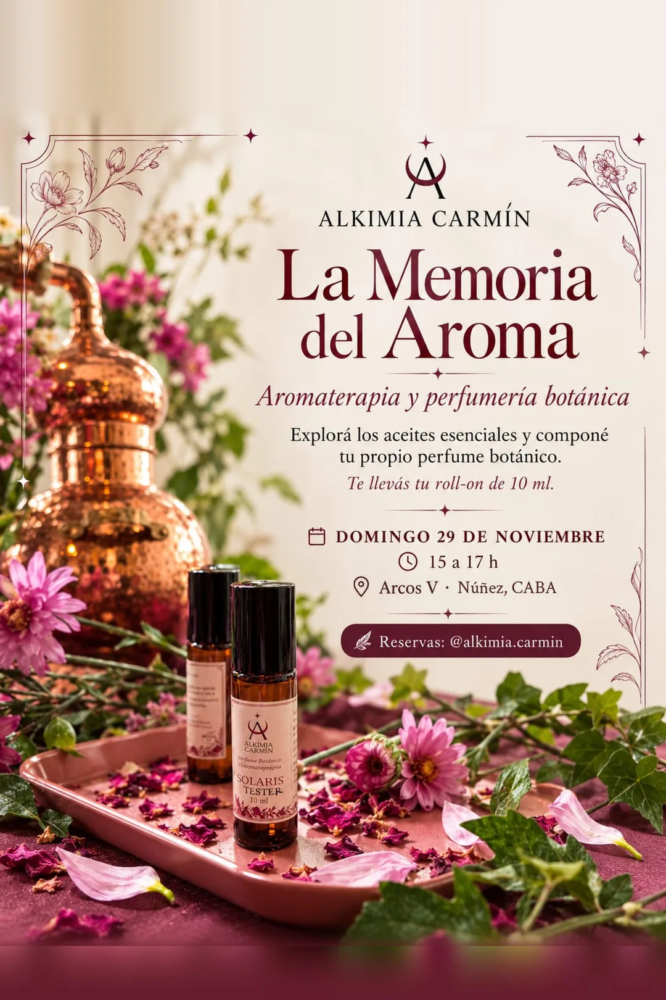
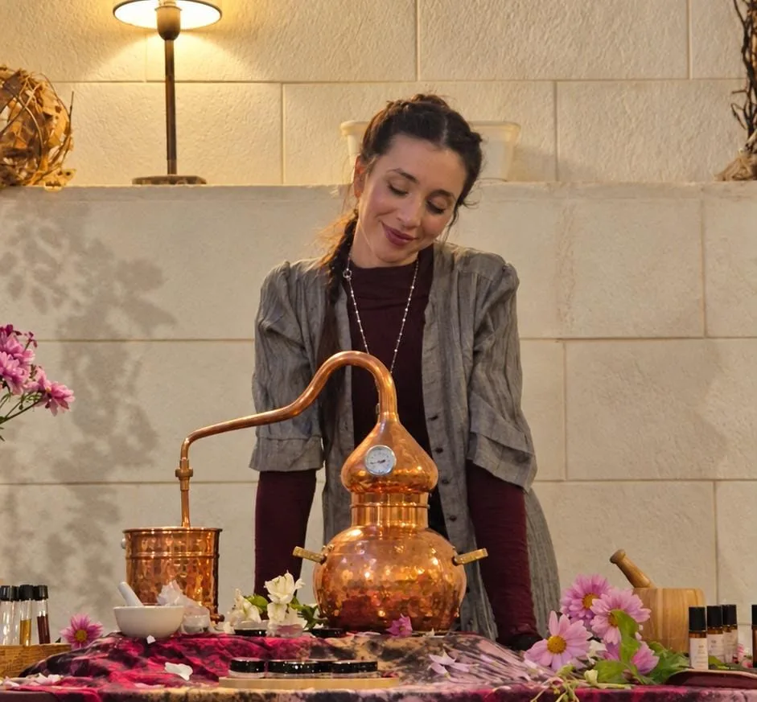

ALKIMIA CARMÍN
Aromaterapia y perfumería botánica: explorá los aceites esenciales y componé tu propio perfume.
Un perfume puede devolvernos a un lugar, a una persona, a un momento. En este encuentro vas a conocer los aceites esenciales, sus notas y cómo se combinan, para crear con tus manos una fragancia que sea tuya.
Un espacio íntimo para despertar los sentidos, aprender y compartir saberes con otras.
No hace falta experiencia previa: solo ganas de explorar.
Artista, herbalista, fitoterapeuta y aromaterapeuta certificada. Su recorrido por la belleza, la cosmética y el autocuidado la acercó a los saberes medicinales de las plantas y a su universo aromático.
Durante su vida en Nueva Zelanda encontró su vocación como facilitadora de espacios para reconectar con lo sagrado en lo cotidiano. Así nació Alkimia Carmín: encuentros de enriquecimiento personal, expresión propia y bienestar, con conciencia ecológica.

Las consultas y reservas las gestiona directamente Carmín.
Escribirle por Instagram